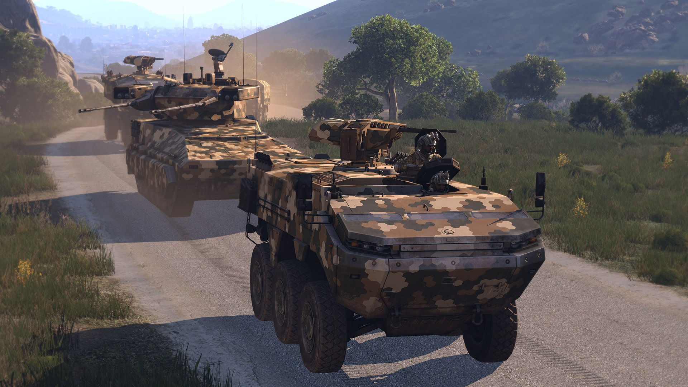
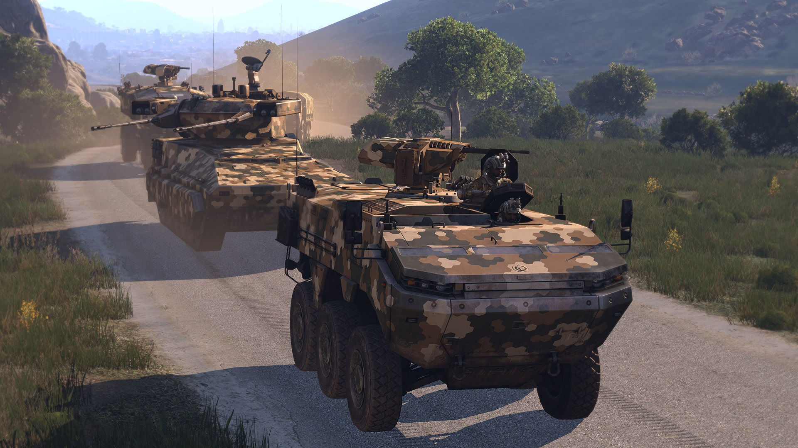

Minu lemmik mäng MAKSYM MISKEVYCH
- Dota 2
- Platvorm - PC, väljalaskeaeg - 9 juuli 2013, lühike sisututvustus - Dota 2 on online-multiplayer-areenamäng, kus kaks viieliikmelist meeskonda võitlevad omavahel, kaitstes oma baase ja püüdes hävitada vastase baasi.
Avaleht

Dota 2
Dota 2 põhineb Warcraft III modifikatsioonil nimega Defence of the Ancients (DotA). Mängus on erinevaid kangelasi, kellel kõigil on oma unikaalne ajalugu ja võimed. Mängumaailm sisaldab palju müüte ja legende ning tegelased on pärit erinevatest maailmadest ja ajastutest.

Dota 2 gameplay
Siin näete, et seal on kangelased, teie liitlased, esemed, mida me ostame mängus, kuld vaja osta esemeid, kaart, hooned, mis tuleb lammutada, et võita

Erinevaid linke
Peamine Dota saitDota on steam
Mängust Dota 2
Dota 2 on populaarne MOBA mäng, kus kaks meeskonda võitlevad, et hävitada vastase baas. Mäng pakub üle 100 erineva kangelase, igaühel oma unikaalsed võimed. Graafika ja helikujundus on muljetavaldavad, ning mäng on saadaval mitmel platvormil, sealhulgas PC, Mac ja Linux. Dota 2 on suurepärane valik neile, kes otsivad sügavat strateegiat ja põnevaid võitlusi.